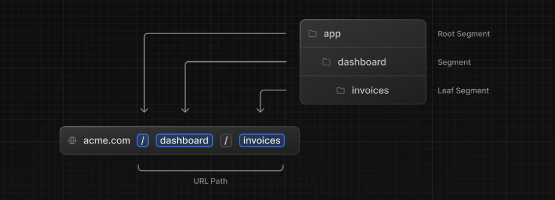
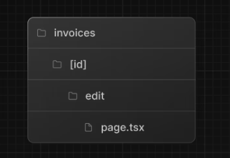

レイアウトとページ
ネストされたルーティング¶
Next.js は、フォルダーを使用してネストされたルートを作成するファイル システム ルーティングを使用します。

layout.tsxおよびpage.tsxを使用して、ルートごとに個別の UI を作成できます。
ネストされたルートを作成するには、フォルダーを互いにネストし、page.tsxその中にファイルを追加します。
例)
以下のフォルダ構成の場合、
http://localhost:3000/dashboard/invoices
にてアクセスできる

レイアウト¶
Next.js では、特別なlayout.tsxファイルを使用して、
複数のページで共有される UI を作成できます。
作成したフォルダ以下のpageでlayout.tsxが適用される。
一階層前のフォルダでもlayout.tsxを設定した場合は、
レイアウトは2つ適用される。(両方のレイアウトが適用される。)
/app/layout.tsxはルートレイアウトと呼ばれ、必須となる。
これは全てのページで共有される。
/app/layout.tsx
import '@/app/ui/global.css';
import { inter } from '@/app/ui/fonts';
export default function RootLayout({
children,
}: {
children: React.ReactNode;
}) {
return (
<html lang="en">
<body className={`${inter.className} antialiased`}>{children}</body>
</html>
);
}
部分レンダリング¶
同じ階層以下でlayout.tsxを使いまわしていた場合、
ナビゲーション時にpage.tsxのページコンポーネントのみが更新されて、
レイアウトは再レンダリングされないこと
ページ間の移動¶
aタグ...ページ遷移時にページ全体が更新されてしまう
Next.js では、<Link />コンポーネントを使用してアプリケーション内のページ間をリンクできます。
→aタグの代わりにこれを使う
→ページが更新されることが無くなった。
<Link href="…">
自動コード分割とプリフェッチ¶
Next.jsではルートごとにアプリを自動的にコード分割している。
初期読み込み時、すべてのアプリケーションコードを読み込む。
→ 特定のページでエラーが起きてもアプリの残りの部分は引き続き動作する
本番環境では<Link>コンポーネントがブラウザに表示されるたびに
リンク先のページをバックグラウンドで読み込む。
そのため、ページ遷移が瞬時に行われているように感じる。
現在のパスを取得する¶
'use client'; // 記載しないと怒られる
import { usePathname } from 'next/navigation';
export default function NavLinks() {
const pathname = usePathname();
// ...
}
http://localhost:3000/dashboard/customers
が現在のパスなら、
pathnameには/dashboard/customersが入る。
use clientは、サーバー コンポーネントモジュールとクライアントコンポーネント モジュール間の境界を宣言するために使用されます。
→ App Router のすべてのコンポーネントがサーバー コンポーネントであり、これらの API は利用できないため
→ importすると、子にも影響があるため、わざわざ各コンポーネントで宣言する必要はない。
Using Client Components in Next.js
動的ルートセグメント¶
例えば、URLにユーザーのIDをセットしてリクエストする場合を考える。
<Link
href={`/dashboard/invoices/${id}/edit`}
className="rounded-md border p-2 hover:bg-gray-100"
>
このようにLinkコンポーネントにhrefを設定して、アクセスする。
すると、下記のようなディレクトリ構造下にあるpage.tsxに移動する。

page.tsxでは以下のようにして[id]の値を受け取ることができる。
import Form from '@/app/ui/invoices/edit-form';
import Breadcrumbs from '@/app/ui/invoices/breadcrumbs';
import { fetchCustomers } from '@/app/lib/data';
export default async function Page({ params }: { params: { id: string } }) {
const id = params.id;
// ...
}